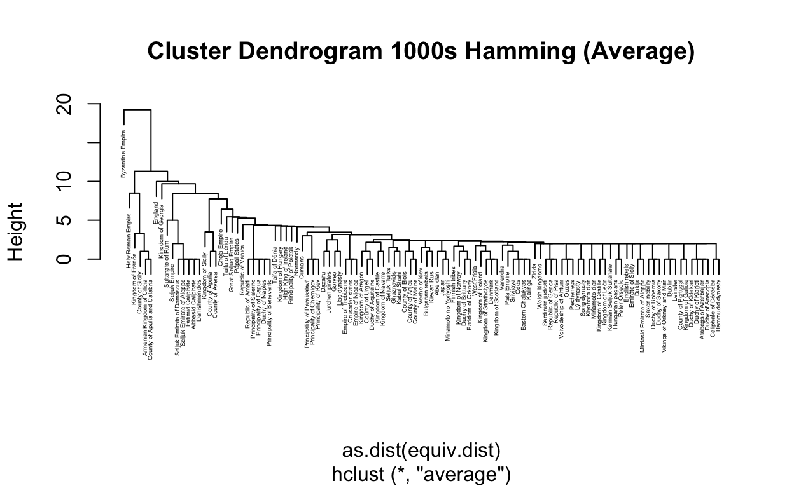
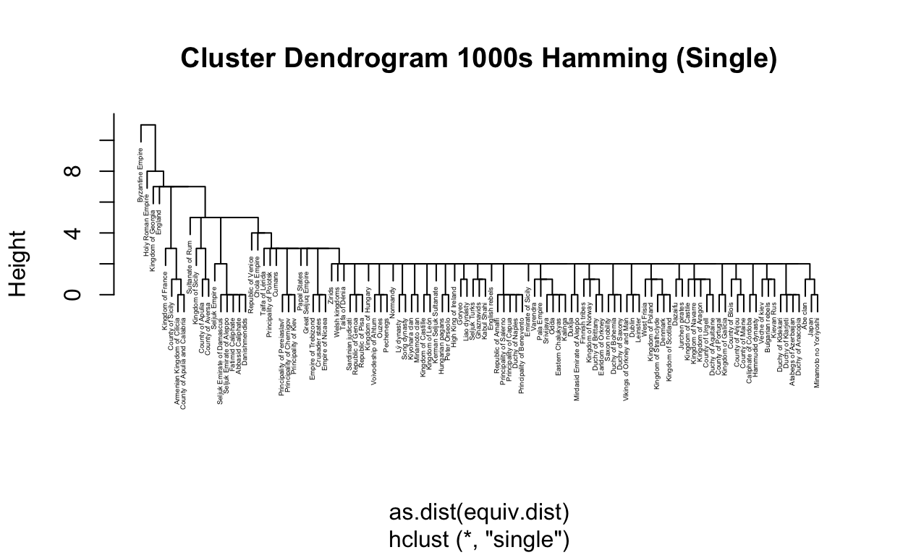
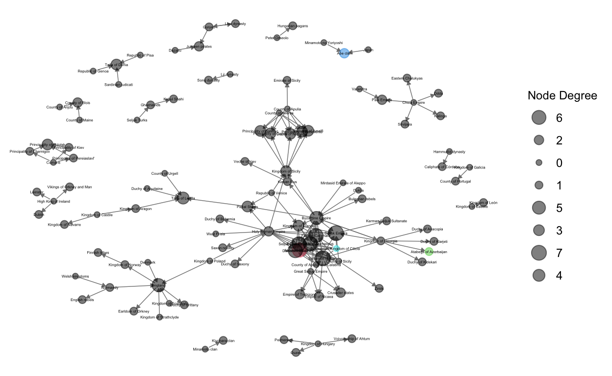
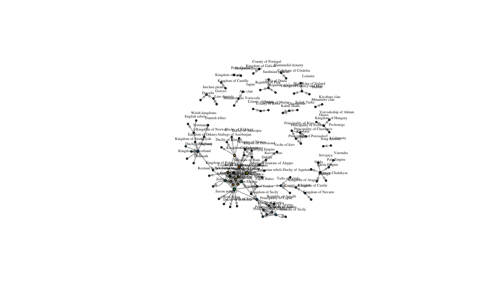
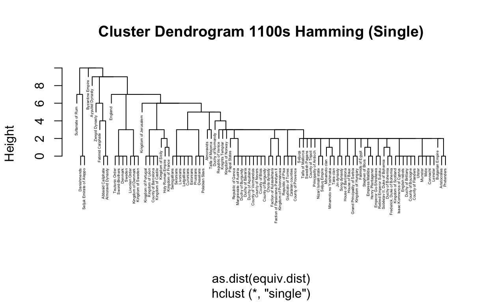
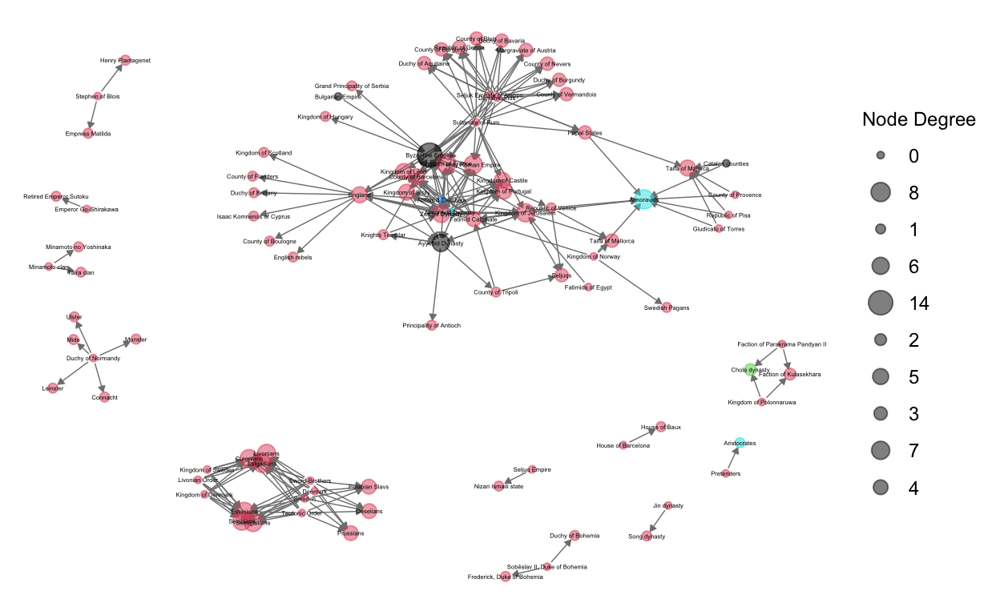
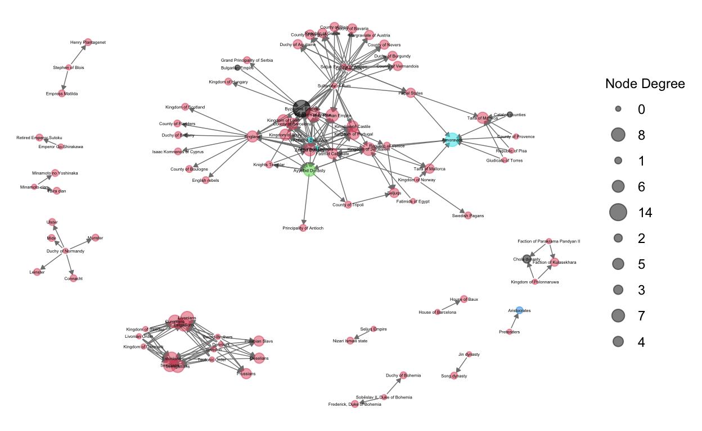
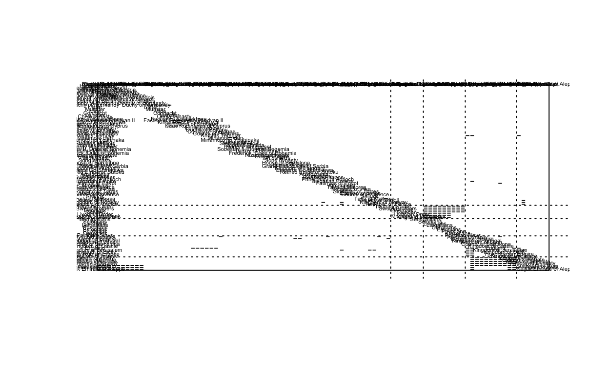
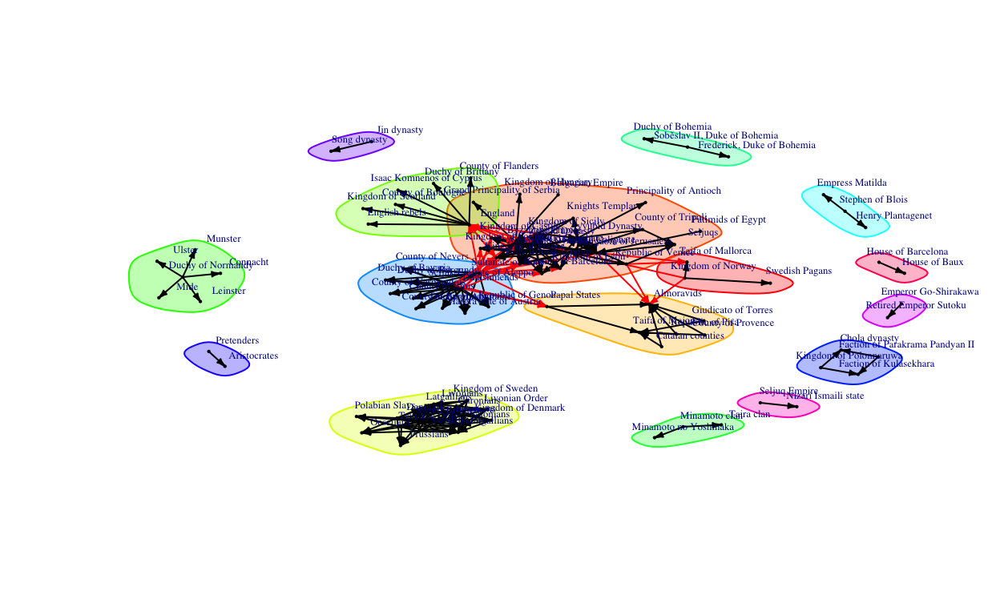

Background and Research Question:
Wikipedia is self-described as a “free content, multilingual online encyclopedia written and maintained by a community of volunteers through a model of open collaboration,” information on the website i shared and maintained “using a wiki-based editing system. [and] Individual contributors,” being the 5th most visited website in the world it is also the largest and most-read reference work in history.” (“https://en.wikipedia.org/wiki/Wikipedia”) Because of Wikipedia’s position, as an arbiter of information and reference for a number of subjects, it is essential to understand the nature of the required citations and how they inform the websites portrayal of history and information. (Chase 2021)
Conflict is a defining feature of history, the results of war and the groups involved are essential to understanding dynamics of power globally. A war can represent the transfer of material, territorial, and strategic power between groups. As a result the networks of wars between nations can give some notion of power centrality among warring nations.
Since wikipedia has become a widely accepted (if often critiqued) source of information, its citations and the information resulting from them can give us a sense of how where the center of global conflict, and thus the most central nations, according to popular and accessible academic literature.
https://www.visualcapitalist.com/the-50-most-visited-websites-in-the-world/
Chase, Matt. “Wikipedia is 20, and its reputation has never been higher”. The Economist. January 9, 2021. Retrieved February 25, 2021.
Part 1:
Describe the Dataset You Are Using:
The Dataset Being Used: The dataset that I am using is wikipedia list of wars throughout history, this article is the “List of wars: 1000–1499” which acts as a subset of the “2nd-millennium conflicts” I chose this dataset as an exemplar of popular history’s depiction of the centralization of worldwide conflict. Wikipedia, being an accessible source generally created from relevant citations makes it a good case study to see where historical writers and academics center their world are relevant conflicts.
Identify initial network format:
Answer: The initial network format is as an edge list, the first, in column contains the winners of each war while the second, out column contains the losers of each. These sets of belligerents are directed
Network Structure: Wars Startings in the 1000s
Network attributes:
vertices = 111
directed = TRUE
hyper = FALSE
loops = FALSE
multiple = TRUE
bipartite = FALSE
total edges= 153
missing edges= 0
non-missing edges= 153
Vertex attribute names:
vertex.names
No edge attributesNetwork Structure: Wars Startings in the 1100s
Network attributes:
vertices = 97
directed = TRUE
hyper = FALSE
loops = FALSE
multiple = TRUE
bipartite = FALSE
total edges= 238
missing edges= 0
non-missing edges= 238
Vertex attribute names:
vertex.names
No edge attributesNetwork Structure: Wars Startings in the 1200s
Network attributes:
vertices = 162
directed = TRUE
hyper = FALSE
loops = FALSE
multiple = TRUE
bipartite = FALSE
total edges= 313
missing edges= 0
non-missing edges= 313
Vertex attribute names:
vertex.names
No edge attributesIdentify Nodes: Describe and identify the nodes (including how many nodes are in the dataset)
Answer: Nodes or vertices in these datasets represent belligerents in wars throughout history, the involved parties in each conflict can be a nation, province, individual, or group so long as they are listed as involved in the conflict. In the 1000s there are 117, in the 1100s there are 78 and in the 1200s there are 161.
What Constitutes a Tie: What constitutes a tie or edge (including how many ties, whether ties are directed/undirected and weighted/binary, and how to interpret the value of the tie if any)
Answer: A tie or edge in this dataset represents a war, this war can be between two nations or groups within a nation. These edges can represent a war that involved many more nations but are always tied to each and every party involved on both sides. These edges are directed and the direction indicates which side “won” the conflict (if an edge has an arrow pointing to another the node that originated that arrow won the war against them. There are 153 edges in the 1000s, 225 edges in 1100s and 313 edges in the 1200s.
Edge Attributes and Subset: Whether or not there are edge attributes that might be used to subset data or stack multiple networks (e.g., tie type, year, etc).
Answer: There are a number of attributes that could be used to subset the data, year that the conflict began or the length of time it lasted are available. Aspects like each side’s religion and the area where the conflict took place could be used to subset the data itself.
Part 2:
Brokerage and Betweeness centrality
What are betweeness and brokerage cenrrality Calculate brokerage and betweenneess centrality measures for one or more subsets of your network data, and write up the results and your interpretation of them.
Answer: I will be calculating these measures for wars in 1000-1099, 1100-1199, and 1200-1399.
Brokerage scores in the 1000s
(wars_in_1000s.nodes.stat_2%>%
arrange(desc(broker.tot))%>%
slice(1:10))[,c(1,11:15)] %>%kable()
| name | broker.tot | broker.coord | broker.itin | broker.rep | broker.gate |
|---|---|---|---|---|---|
| Byzantine Empire | 22.7376579 | NaN | 3.1654785 | NaN | NaN |
| Holy Roman Empire | 9.2813605 | NaN | 2.2468427 | NaN | NaN |
| Sultanate of Rum | 9.2813605 | NaN | -0.5090648 | NaN | NaN |
| England | 6.9745666 | NaN | 5.0036896 | -0.0853606 | -0.0853606 |
| Kingdom of Sicily | 5.0522384 | -0.0176111 | 4.0866123 | -0.1201631 | -0.1201631 |
| Seljuk Empire | 1.9765133 | -0.0176111 | -0.5084146 | 3.4677529 | -0.1201631 |
| Kingdom of France | 1.9765133 | NaN | -0.5090648 | NaN | NaN |
| Kingdom of Georgia | 0.8231164 | -0.0176111 | -0.5084146 | -0.1201631 | -0.1201631 |
| Papal States | 0.4386507 | -0.0176111 | -0.5084146 | -0.1201631 | 10.6435850 |
| Ghaznavids | 0.0541851 | -0.1380791 | -0.4907567 | -0.2903366 | -0.2903366 |
Brokerage scores in the 1100s
(wars_in_1100s.nodes.stat_2%>%
arrange(desc(broker.tot))%>%
slice(1:10))[,c(1,10:14)] %>%kable()
| name | broker.tot | broker.coord | broker.itin | broker.rep | broker.gate |
|---|---|---|---|---|---|
| Kingdom of Jerusalem | 17.1050061 | NaN | 2.8705599 | 24.5610650 | -0.1357675 |
| Fatimid Caliphate | 10.2415178 | NaN | -0.6472506 | NaN | NaN |
| Ayyubid Dynasty | 9.3615834 | NaN | -0.6465587 | -0.1357675 | -0.1357675 |
| Zengid Dynasty | 7.4257278 | NaN | 0.7591543 | NaN | NaN |
| Byzantine Empire | 6.8977671 | NaN | 0.7602887 | -0.1357675 | -0.1357675 |
| England | 5.8418459 | NaN | -0.6465587 | -0.1357675 | -0.1357675 |
| Holy Roman Empire | 3.0260558 | NaN | -0.6465587 | -0.1357675 | -0.1357675 |
| Kingdom of France | 1.6181608 | NaN | -0.6465587 | -0.1357675 | -0.1357675 |
| Kingdom of Sicily | 0.5622395 | -0.1467125 | -0.6293842 | -0.3476788 | -0.3476788 |
| Papal States | 0.0342789 | -0.1264908 | -0.6336748 | -0.3236913 | 2.5014147 |
Brokerage scores in the 1200s
| name | broker.tot | broker.coord | broker.itin | broker.rep | broker.gate |
|---|---|---|---|---|---|
| Mongol Empire | 48.379636 | NaN | -0.5944061 | NaN | NaN |
| Kingdom of France | 28.915776 | NaN | -0.5944061 | NaN | NaN |
| Ayyubid Dynasty | 27.233714 | NaN | 1.6475606 | NaN | NaN |
| Kingdom of England | 22.187528 | NaN | 9.1207832 | NaN | NaN |
| Republic of Genoa | 12.095156 | NaN | -0.5944061 | NaN | NaN |
| Knights Templar | 10.172799 | NaN | 1.6475606 | NaN | NaN |
| Holy Roman Empire | 4.886318 | -0.0168705 | -0.5939130 | 10.98895 | 10.9889530 |
| Principality of Antioch | 4.886318 | -0.0168705 | 2.3961055 | 13.76762 | -0.1257267 |
| Kingdom of Cyprus | 4.646024 | 59.2666679 | 0.1535916 | 13.76762 | 10.9889530 |
| County of Tripoli | 3.684845 | NaN | 0.9005226 | 19.49749 | -0.0891814 |
| name | broker.gate |
|---|---|
| Papal States | 10.6435850 |
| County of Aversa | -0.0853606 |
| County of Sicily | -0.0853606 |
| England | -0.0853606 |
| Chola Empire | -0.0853606 |
| County of Apulia | -0.1201631 |
| Kingdom of Sicily | -0.1201631 |
| Kingdom of Georgia | -0.1201631 |
| Great Seljuq Empire | -0.1201631 |
| Seljuk Empire | -0.1201631 |
| name | broker.tot |
|---|---|
| Byzantine Empire | 22.7376579 |
| Holy Roman Empire | 9.2813605 |
| Sultanate of Rum | 9.2813605 |
| England | 6.9745666 |
| Kingdom of Sicily | 5.0522384 |
| Seljuk Empire | 1.9765133 |
| Kingdom of France | 1.9765133 |
| Kingdom of Georgia | 0.8231164 |
| Papal States | 0.4386507 |
| Ghaznavids | 0.0541851 |
Option 2.A
For a Specific Research Question: If you have a specific research question, please feel free to use that to guide your analysis. Otherwise, you may want to orient your analysis as follows in order to identify a compelling question or noteworthy pattern in the data that can be interpreted.
Answer: Since I am interested in the relative power of nations by their relative position ad centrality in the worldwide conflict, network brokerage can be used to illustrate significant positions in global conflict. Below I wanted to look at 4 kinds of brokerage, these are broker.gate or gatekeeper, coordinator, liason, and itinerant. I am interested to see if these specific coordination types are primarily done by specific nations.


Total Brokerage
Explanation: Looking at total brokerage in this dataset gives a sense of which factions were responsible for highest connection of unconnected actors through conflict. Given the crusades igniting conflict between Europe and the middle east it is sensible that the Byzantine Empire in the center of both connects the most unconnected actors through conflict closely followed by the Sultanate of Rum, a major Muslim faction that fought against the crusades and third being the Holy Roman Empire who participated in many conflicts including the crusades. These are followed by England who centered the wars in the British isles and the Kingdom of Sicily who were also in a position of conflict.
| name | broker.tot |
|---|---|
| Byzantine Empire | 22.737658 |
| Holy Roman Empire | 9.281360 |
| Sultanate of Rum | 9.281360 |
| England | 6.974567 |
| Kingdom of Sicily | 5.052238 |
Coordinator Brokerage
Explanation: In this case no particular country is very high above any other in terms of their coordinator brokerage, meaning that within groups no particular nations appear to be brokering more within the groups.
| name | broker.coord |
|---|---|
| County of Apulia | -0.0176111 |
| Kingdom of Sicily | -0.0176111 |
| Kingdom of Georgia | -0.0176111 |
| Great Seljuq Empire | -0.0176111 |
| Papal States | -0.0176111 |
Itinerant Brokerage
Explanation: Itinerant brokerage represents when a non-group actor connects 2 actors in a group it is no in to each other, in this case England has the highest score. Looking at the network graph they do appear to connect 2 actors in a group together.
| name | broker.itin |
|---|---|
| England | 5.0036896 |
| Kingdom of Sicily | 4.0866123 |
| Byzantine Empire | 3.1654785 |
| Holy Roman Empire | 2.2468427 |
| Principality of Kiev | 0.4812412 |
Representative Brokerage
Explanation: Representative brokerage indicates that the broker, or nation in question loses a war to another in their group, but wins another against a faction outside of their group. This can be though of as their directed connections to them. In this case the Seljuk Empire and Kingdom of Aragon have instances in which they lose to factions within their group before beating those outside of it.
| name | broker.rep |
|---|---|
| Seljuk Empire | 3.4677529 |
| Kingdom of Aragon | 0.9281821 |
| County of Aversa | -0.0853606 |
| County of Sicily | -0.0853606 |
| England | -0.0853606 |
Gatekeeper Brokerage
Explanation: The Papal states being ranked highest in gatekeeper brokerage is an interesting observation as no other nation in the dataset appears to be close to their level as most are negative in this category. In this cae being a gatekeeper means that they are in at conflict in a group with another while the nation in a different group of conflicts is only at war with them from the group. This is an interesting observation given the Papal states role as a coordinator of the war, but not a participant in the conflcit as directly as other belligerents. (This being the crusade given the period)
| name | broker.gate |
|---|---|
| Papal States | 10.6435850 |
| County of Aversa | -0.0853606 |
| County of Sicily | -0.0853606 |
| England | -0.0853606 |
| Chola Empire | -0.0853606 |
Liaison Brokerage
Explanation: A liaison broker, in this case, is a faction that loses a war to a group they do not belong to and wins a war against a different group than the first that they also do not belong to. The Byzantine Empire, Sultanate of Rum, and Holy Roman Empire are highest in this category likely owing to their frequent states of conflict beyond the crusades against a variety of groups.
| name | broker.lia |
|---|---|
| Byzantine Empire | 28.140866 |
| Sultanate of Rum | 12.477603 |
| Holy Roman Empire | 10.961803 |
| England | 6.548214 |
| Kingdom of Sicily | 4.589419 |



Network 1000s Plot Grouping Determined with No Cluster Method

Network 1000s Plot Grouping Determined with the Average Cluster Method
Network 1000s Plot Grouping Determined with the Single Cluster Method

Network 1000s Plot Grouping Determined with the Ward.D Cluster Method

Network 1000s Plot igraph
Network Graphing 1100s


Network 1100s Plot Grouping Determined with No Cluster Method
Network 1100s Plot Grouping Determined with the Average Cluster Method

Network 1100s Plot Grouping Determined with the Single Cluster Method

Network 1100s Plot Grouping Determined with the Ward.D Cluster Method

Network 1100s Plot igraph



wars_in_1000s_edgelist <- as.matrix(wars_in_1000s)
wars_in_1000s_edgelist_network_edgelist <- graph.edgelist(wars_in_1000s_edgelist, directed=TRUE)
wars_in_1000s.ig<-graph_from_data_frame(wars_in_1000s)
wars_in_1000s_network <- asNetwork(wars_in_1000s.ig)
wars_in_1000s.nodes.stat_2
name totdegree indegree outdegree
1 County of Apulia 7 0 7
2 County of Aversa 5 0 5
3 Kingdom of Sicily 8 3 5
4 Ghaznavids 3 1 2
5 Kingdom of Poland 2 0 2
6 Kingdom of Hungary 3 0 3
7 Kingdom of Norway 2 1 1
8 Hammudid dynasty 1 0 1
9 High King of Ireland 3 0 3
10 Denmark 1 0 1
11 Republic of Pisa 1 0 1
12 Republic of Genoa 1 0 1
13 Sardinian judicati 1 0 1
14 Byzantine Empire 18 5 13
15 County of Anjou 1 0 1
16 County of Maine 1 0 1
17 West Frisia 1 0 1
18 Kingdom of Scotland 1 0 1
19 Kingdom of Strathclyde 1 0 1
20 Mirdasid Emirate of Aleppo 1 0 1
21 Kingdom of Georgia 8 1 7
22 Duklja 1 0 1
23 Seljuk Turks 1 0 1
24 Holy Roman Empire 15 2 13
25 Republic of Venice 3 0 3
26 Great Seljuq Empire 4 0 4
27 Sultanate of Rum 11 7 4
28 County of Sicily 9 0 9
29 Kingdom of Aragon 2 1 1
30 County of Urgell 1 0 1
31 Duchy of Aquitaine 1 0 1
32 Papal States 4 3 1
33 England 9 5 4
34 Kingdom of Castile 2 0 2
35 Normandy 3 1 2
36 Welsh kingdoms 1 0 1
37 Principality of Kiev 2 1 1
38 Principality of Chernigov 2 1 1
39 Principality of Pereiaslavl' 2 1 1
40 Cumans 3 0 3
41 Kievan Rus 2 1 1
42 Kingdom of Galicia 1 0 1
43 Kingdom of Castille 1 0 1
44 Seljuk Empire 8 7 1
45 Kingdom of France 10 3 7
46 County of Apulia and Calabria 7 0 7
47 Armenian Kingdom of Cilicia 7 0 7
48 Peter Orseolo 1 0 1
49 Liao dynasty 2 1 1
50 Goryeo 3 1 2
51 Dazaifu 1 0 1
52 Chola Empire 5 0 5
53 Japan 1 0 1
54 Minamoto no Yoriyoshi 1 0 1
55 Lý dynasty 1 0 1
56 Varendra 1 0 1
57 Minamoto clan 1 0 1
58 Principality of Salerno 3 3 0
59 Principality of Benevento 3 3 0
60 Principality of Capua 3 3 0
61 Republic of Amalfi 3 3 0
62 Duchy of Naples 3 3 0
63 Kabul Shahi 2 2 0
64 Voivodeship of Ahtum 1 1 0
65 Finnish tribes 1 1 0
66 Caliphate of Córdoba 1 1 0
67 Leinster 1 1 0
68 Dublin 1 1 0
69 Vikings of Orkney and Man 1 1 0
70 Taifa of Dénia 3 3 0
71 County of Blois 2 2 0
72 Duchy of Anacopia 1 1 0
73 Duchy of Kldekari 1 1 0
74 Duchy of Klarjeti 1 1 0
75 Duchy of Bohemia 1 1 0
76 Empire of Nicaea 2 2 0
77 Empire of Trebizond 2 2 0
78 Crusader states 2 2 0
79 Emirate of Sicily 2 2 0
80 Zirids 2 2 0
81 Taifa of Lérida 4 4 0
82 Duchy of Brittany 2 2 0
83 Kingdom of Navarre 1 1 0
84 Earldom of Orkney 1 1 0
85 Principality of Polotsk 3 3 0
86 Pechenegs 1 1 0
87 Ouzes 1 1 0
88 Veche of kiev 1 1 0
89 County of Portugal 1 1 0
90 Kingdom of León 1 1 0
91 Bulgarian rebels 1 1 0
92 Kerman Seljuk Sultanate 1 1 0
93 Duchy of Saxony 1 1 0
94 Atabegs of Azerbaijan 1 1 0
95 English rebels 1 1 0
96 Saxon nobility 1 1 0
97 Fatimid Caliphate 6 6 0
98 Danishmendids 6 6 0
99 Seljuk Emirate of Aleppo 6 6 0
100 Seljuk Emirate of Damascus 6 6 0
101 Abbasid Caliphate 6 6 0
102 Hungarian pagans 1 1 0
103 Jurchen pirates 2 2 0
104 Eastern Chalukyas 1 1 0
105 Pala Empire 2 2 0
106 Odda 1 1 0
107 Kalinga 1 1 0
108 Srivijaya 1 1 0
109 Abe clan 2 2 0
110 Song dynasty 1 1 0
111 Kiyohara clan 1 1 0
eigen close rc eigen.rc dc
1 0.000000e+00 0.054545455 0.00000000 0.000000e+00 1.0000000
2 0.000000e+00 0.045454545 0.00000000 0.000000e+00 1.0000000
3 0.000000e+00 0.045454545 0.10344828 0.000000e+00 0.8965517
4 0.000000e+00 0.009090909 1.00000000 0.000000e+00 0.0000000
5 1.428998e-01 0.143181818 0.00000000 0.000000e+00 1.0000000
6 0.000000e+00 0.027272727 0.00000000 0.000000e+00 1.0000000
7 0.000000e+00 0.009090909 0.25000000 0.000000e+00 0.7500000
8 0.000000e+00 0.009090909 0.00000000 0.000000e+00 1.0000000
9 0.000000e+00 0.027272727 0.00000000 0.000000e+00 1.0000000
10 0.000000e+00 0.025757576 0.00000000 0.000000e+00 1.0000000
11 0.000000e+00 0.009090909 0.00000000 0.000000e+00 1.0000000
12 0.000000e+00 0.009090909 0.00000000 0.000000e+00 1.0000000
13 0.000000e+00 0.009090909 0.00000000 0.000000e+00 1.0000000
14 5.056632e-01 0.186363636 0.29411765 1.487245e-01 0.7058824
15 0.000000e+00 0.009090909 0.00000000 0.000000e+00 1.0000000
16 0.000000e+00 0.009090909 0.00000000 0.000000e+00 1.0000000
17 1.428998e-01 0.117424242 0.00000000 0.000000e+00 1.0000000
18 0.000000e+00 0.025757576 0.00000000 0.000000e+00 1.0000000
19 0.000000e+00 0.025757576 0.00000000 0.000000e+00 1.0000000
20 2.857997e-01 0.113636364 0.00000000 0.000000e+00 1.0000000
21 4.473330e-01 0.148484848 0.07692308 3.441023e-02 0.9230769
22 2.857997e-01 0.113636364 0.00000000 0.000000e+00 1.0000000
23 0.000000e+00 0.013636364 0.00000000 0.000000e+00 1.0000000
24 2.528316e-01 0.188636364 0.66666667 1.685544e-01 0.3333333
25 9.129827e-02 0.117424242 0.00000000 0.000000e+00 1.0000000
26 2.857997e-01 0.131818182 0.00000000 0.000000e+00 1.0000000
27 2.857997e-01 0.127272727 0.11111111 3.175552e-02 0.8888889
28 1.615333e-01 0.138636364 0.00000000 0.000000e+00 1.0000000
29 0.000000e+00 0.009090909 0.50000000 0.000000e+00 0.5000000
30 0.000000e+00 0.009090909 0.00000000 0.000000e+00 1.0000000
31 0.000000e+00 0.009090909 0.00000000 0.000000e+00 1.0000000
32 0.000000e+00 0.009090909 0.10344828 0.000000e+00 0.8965517
33 0.000000e+00 0.031818182 0.71428571 0.000000e+00 0.2857143
34 0.000000e+00 0.022727273 0.00000000 0.000000e+00 1.0000000
35 0.000000e+00 0.034848485 1.00000000 0.000000e+00 0.0000000
36 0.000000e+00 0.029545455 0.00000000 0.000000e+00 1.0000000
37 0.000000e+00 0.009090909 0.33333333 0.000000e+00 0.6666667
38 0.000000e+00 0.009090909 0.33333333 0.000000e+00 0.6666667
39 0.000000e+00 0.009090909 0.33333333 0.000000e+00 0.6666667
40 0.000000e+00 0.031818182 0.00000000 0.000000e+00 1.0000000
41 0.000000e+00 0.009090909 0.07692308 0.000000e+00 0.9230769
42 0.000000e+00 0.009090909 0.00000000 0.000000e+00 1.0000000
43 0.000000e+00 0.009090909 0.00000000 0.000000e+00 1.0000000
44 0.000000e+00 0.009090909 0.11111111 0.000000e+00 0.8888889
45 1.615333e-01 0.126515152 0.10344828 1.671035e-02 0.8965517
46 1.615333e-01 0.129545455 0.00000000 0.000000e+00 1.0000000
47 1.615333e-01 0.129545455 0.00000000 0.000000e+00 1.0000000
48 0.000000e+00 0.009090909 0.00000000 0.000000e+00 1.0000000
49 5.460239e-13 0.013636364 0.50000000 2.730119e-13 0.5000000
50 2.730119e-13 0.018181818 1.00000000 2.730119e-13 0.0000000
51 0.000000e+00 0.009090909 0.00000000 0.000000e+00 1.0000000
52 0.000000e+00 0.045454545 0.00000000 0.000000e+00 1.0000000
53 0.000000e+00 0.009090909 0.00000000 0.000000e+00 1.0000000
54 0.000000e+00 0.009090909 0.00000000 0.000000e+00 1.0000000
55 0.000000e+00 0.009090909 0.00000000 0.000000e+00 1.0000000
56 0.000000e+00 0.009090909 0.00000000 0.000000e+00 1.0000000
57 0.000000e+00 0.009090909 0.00000000 0.000000e+00 1.0000000
58 0.000000e+00 0.000000000 0.17647059 0.000000e+00 0.8235294
59 0.000000e+00 0.000000000 0.17647059 0.000000e+00 0.8235294
60 0.000000e+00 0.000000000 0.17647059 0.000000e+00 0.8235294
61 0.000000e+00 0.000000000 0.17647059 0.000000e+00 0.8235294
62 0.000000e+00 0.000000000 0.17647059 0.000000e+00 0.8235294
63 0.000000e+00 0.000000000 1.00000000 0.000000e+00 0.0000000
64 0.000000e+00 0.000000000 0.33333333 0.000000e+00 0.6666667
65 0.000000e+00 0.000000000 1.00000000 0.000000e+00 0.0000000
66 0.000000e+00 0.000000000 1.00000000 0.000000e+00 0.0000000
67 0.000000e+00 0.000000000 0.33333333 0.000000e+00 0.6666667
68 0.000000e+00 0.000000000 0.33333333 0.000000e+00 0.6666667
69 0.000000e+00 0.000000000 0.33333333 0.000000e+00 0.6666667
70 0.000000e+00 0.000000000 1.00000000 0.000000e+00 0.0000000
71 0.000000e+00 0.000000000 1.00000000 0.000000e+00 0.0000000
72 0.000000e+00 0.000000000 0.14285714 0.000000e+00 0.8571429
73 0.000000e+00 0.000000000 0.14285714 0.000000e+00 0.8571429
74 0.000000e+00 0.000000000 0.14285714 0.000000e+00 0.8571429
75 0.000000e+00 0.000000000 0.07692308 0.000000e+00 0.9230769
76 0.000000e+00 0.000000000 0.25000000 0.000000e+00 0.7500000
77 0.000000e+00 0.000000000 0.25000000 0.000000e+00 0.7500000
78 0.000000e+00 0.000000000 0.25000000 0.000000e+00 0.7500000
79 0.000000e+00 0.000000000 0.28571429 0.000000e+00 0.7142857
80 0.000000e+00 0.000000000 0.22222222 0.000000e+00 0.7777778
81 0.000000e+00 0.000000000 1.00000000 0.000000e+00 0.0000000
82 0.000000e+00 0.000000000 0.50000000 0.000000e+00 0.5000000
83 0.000000e+00 0.000000000 0.50000000 0.000000e+00 0.5000000
84 0.000000e+00 0.000000000 0.25000000 0.000000e+00 0.7500000
85 0.000000e+00 0.000000000 1.00000000 0.000000e+00 0.0000000
86 0.000000e+00 0.000000000 0.33333333 0.000000e+00 0.6666667
87 0.000000e+00 0.000000000 0.33333333 0.000000e+00 0.6666667
88 0.000000e+00 0.000000000 1.00000000 0.000000e+00 0.0000000
89 0.000000e+00 0.000000000 1.00000000 0.000000e+00 0.0000000
90 0.000000e+00 0.000000000 1.00000000 0.000000e+00 0.0000000
91 0.000000e+00 0.000000000 0.07692308 0.000000e+00 0.9230769
92 0.000000e+00 0.000000000 1.00000000 0.000000e+00 0.0000000
93 0.000000e+00 0.000000000 0.07692308 0.000000e+00 0.9230769
94 0.000000e+00 0.000000000 0.14285714 0.000000e+00 0.8571429
95 0.000000e+00 0.000000000 0.50000000 0.000000e+00 0.5000000
96 0.000000e+00 0.000000000 0.07692308 0.000000e+00 0.9230769
97 0.000000e+00 0.000000000 0.10714286 0.000000e+00 0.8928571
98 0.000000e+00 0.000000000 0.10714286 0.000000e+00 0.8928571
99 0.000000e+00 0.000000000 0.10714286 0.000000e+00 0.8928571
100 0.000000e+00 0.000000000 0.10714286 0.000000e+00 0.8928571
101 0.000000e+00 0.000000000 0.10714286 0.000000e+00 0.8928571
102 0.000000e+00 0.000000000 1.00000000 0.000000e+00 0.0000000
103 0.000000e+00 0.000000000 0.66666667 0.000000e+00 0.3333333
104 0.000000e+00 0.000000000 0.20000000 0.000000e+00 0.8000000
105 0.000000e+00 0.000000000 0.33333333 0.000000e+00 0.6666667
106 0.000000e+00 0.000000000 0.20000000 0.000000e+00 0.8000000
107 0.000000e+00 0.000000000 0.20000000 0.000000e+00 0.8000000
108 0.000000e+00 0.000000000 0.20000000 0.000000e+00 0.8000000
109 0.000000e+00 0.000000000 1.00000000 0.000000e+00 0.0000000
110 0.000000e+00 0.000000000 1.00000000 0.000000e+00 0.0000000
111 0.000000e+00 0.000000000 1.00000000 0.000000e+00 0.0000000
eigen.dc broker.tot broker.coord broker.itin broker.rep
1 0.000000e+00 -0.71474619 -0.01761109 -0.5084146 -0.12016311
2 0.000000e+00 -0.71474619 NaN -0.5088465 -0.08536061
3 0.000000e+00 5.05223843 -0.01761109 4.0866123 -0.12016311
4 0.000000e+00 0.05418509 -0.13807914 -0.4907567 -0.29033662
5 1.428998e-01 -0.71474619 -0.19356624 -0.4721526 -0.33997092
6 0.000000e+00 -0.71474619 -0.13807914 -0.4907567 -0.29033662
7 0.000000e+00 -0.33028055 -0.19356624 -0.4721526 -0.33997092
8 0.000000e+00 -0.71474619 -0.44208280 -0.2616354 -0.44960918
9 0.000000e+00 -0.71474619 -0.13807914 -0.4907567 -0.29033662
10 0.000000e+00 -0.71474619 -0.44208280 -0.2616354 -0.44960918
11 0.000000e+00 -0.71474619 -0.44208280 -0.2616354 -0.44960918
12 0.000000e+00 -0.71474619 -0.44208280 -0.2616354 -0.44960918
13 0.000000e+00 -0.71474619 -0.44208280 -0.2616354 -0.44960918
14 3.569387e-01 22.73765793 NaN 3.1654785 NaN
15 0.000000e+00 -0.71474619 -0.44208280 -0.2616354 -0.44960918
16 0.000000e+00 -0.71474619 -0.44208280 -0.2616354 -0.44960918
17 1.428998e-01 -0.71474619 -0.44208280 -0.2616354 -0.44960918
18 0.000000e+00 -0.71474619 -0.44208280 -0.2616354 -0.44960918
19 0.000000e+00 -0.71474619 -0.44208280 -0.2616354 -0.44960918
20 2.857997e-01 -0.71474619 -0.44208280 -0.2616354 -0.44960918
21 4.129228e-01 0.82311638 -0.01761109 -0.5084146 -0.12016311
22 2.857997e-01 -0.71474619 -0.44208280 -0.2616354 -0.44960918
23 0.000000e+00 -0.71474619 -0.44208280 -0.2616354 -0.44960918
24 8.427720e-02 9.28136049 NaN 2.2468427 NaN
25 9.129827e-02 -0.71474619 -0.13807914 -0.4907567 -0.29033662
26 2.857997e-01 -0.71474619 -0.01761109 -0.5084146 -0.12016311
27 2.540442e-01 9.28136049 NaN -0.5090648 NaN
28 1.615333e-01 -0.71474619 NaN -0.5088465 -0.08536061
29 0.000000e+00 -0.33028055 -0.19356624 -0.4721526 0.92818207
30 0.000000e+00 -0.71474619 -0.44208280 -0.2616354 -0.44960918
31 0.000000e+00 -0.71474619 -0.44208280 -0.2616354 -0.44960918
32 0.000000e+00 0.43865074 -0.01761109 -0.5084146 -0.12016311
33 0.000000e+00 6.97456664 NaN 5.0036896 -0.08536061
34 0.000000e+00 -0.71474619 -0.19356624 -0.4721526 -0.33997092
35 0.000000e+00 0.05418509 -0.13807914 0.4423585 -0.29033662
36 0.000000e+00 -0.71474619 -0.44208280 -0.2616354 -0.44960918
37 0.000000e+00 -0.33028055 -0.19356624 0.4812412 -0.33997092
38 0.000000e+00 -0.33028055 -0.19356624 0.4812412 -0.33997092
39 0.000000e+00 -0.33028055 -0.19356624 0.4812412 -0.33997092
40 0.000000e+00 -0.71474619 -0.13807914 -0.4907567 -0.29033662
41 0.000000e+00 -0.33028055 -0.19356624 -0.4721526 -0.33997092
42 0.000000e+00 -0.71474619 -0.44208280 -0.2616354 -0.44960918
43 0.000000e+00 -0.71474619 -0.44208280 -0.2616354 -0.44960918
44 0.000000e+00 1.97651330 -0.01761109 -0.5084146 3.46775292
45 1.448230e-01 1.97651330 NaN -0.5090648 NaN
46 1.615333e-01 -0.71474619 -0.01761109 -0.5084146 -0.12016311
47 1.615333e-01 -0.71474619 -0.01761109 -0.5084146 -0.12016311
48 0.000000e+00 -0.71474619 -0.44208280 -0.2616354 -0.44960918
49 2.730119e-13 -0.71474619 -0.19356624 -0.4721526 -0.33997092
50 0.000000e+00 -0.33028055 -0.13807914 0.4423585 -0.29033662
51 0.000000e+00 -0.71474619 -0.44208280 -0.2616354 -0.44960918
52 0.000000e+00 -0.71474619 NaN -0.5088465 -0.08536061
53 0.000000e+00 -0.71474619 -0.44208280 -0.2616354 -0.44960918
54 0.000000e+00 -0.71474619 -0.44208280 -0.2616354 -0.44960918
55 0.000000e+00 -0.71474619 -0.44208280 -0.2616354 -0.44960918
56 0.000000e+00 -0.71474619 -0.44208280 -0.2616354 -0.44960918
57 0.000000e+00 -0.71474619 -0.44208280 -0.2616354 -0.44960918
58 0.000000e+00 -0.71474619 -0.13807914 -0.4907567 -0.29033662
59 0.000000e+00 -0.71474619 -0.13807914 -0.4907567 -0.29033662
60 0.000000e+00 -0.71474619 -0.13807914 -0.4907567 -0.29033662
61 0.000000e+00 -0.71474619 -0.13807914 -0.4907567 -0.29033662
62 0.000000e+00 -0.71474619 -0.13807914 -0.4907567 -0.29033662
63 0.000000e+00 -0.71474619 -0.19356624 -0.4721526 -0.33997092
64 0.000000e+00 -0.71474619 -0.44208280 -0.2616354 -0.44960918
65 0.000000e+00 -0.71474619 -0.44208280 -0.2616354 -0.44960918
66 0.000000e+00 -0.71474619 -0.44208280 -0.2616354 -0.44960918
67 0.000000e+00 -0.71474619 -0.44208280 -0.2616354 -0.44960918
68 0.000000e+00 -0.71474619 -0.44208280 -0.2616354 -0.44960918
69 0.000000e+00 -0.71474619 -0.44208280 -0.2616354 -0.44960918
70 0.000000e+00 -0.71474619 -0.13807914 -0.4907567 -0.29033662
71 0.000000e+00 -0.71474619 -0.19356624 -0.4721526 -0.33997092
72 0.000000e+00 -0.71474619 -0.44208280 -0.2616354 -0.44960918
73 0.000000e+00 -0.71474619 -0.44208280 -0.2616354 -0.44960918
74 0.000000e+00 -0.71474619 -0.44208280 -0.2616354 -0.44960918
75 0.000000e+00 -0.71474619 -0.44208280 -0.2616354 -0.44960918
76 0.000000e+00 -0.71474619 -0.19356624 -0.4721526 -0.33997092
77 0.000000e+00 -0.71474619 -0.19356624 -0.4721526 -0.33997092
78 0.000000e+00 -0.71474619 -0.19356624 -0.4721526 -0.33997092
79 0.000000e+00 -0.71474619 -0.19356624 -0.4721526 -0.33997092
80 0.000000e+00 -0.71474619 -0.19356624 -0.4721526 -0.33997092
81 0.000000e+00 -0.71474619 -0.01761109 -0.5084146 -0.12016311
82 0.000000e+00 -0.71474619 -0.19356624 -0.4721526 -0.33997092
83 0.000000e+00 -0.71474619 -0.44208280 -0.2616354 -0.44960918
84 0.000000e+00 -0.71474619 -0.44208280 -0.2616354 -0.44960918
85 0.000000e+00 -0.71474619 -0.13807914 -0.4907567 -0.29033662
86 0.000000e+00 -0.71474619 -0.44208280 -0.2616354 -0.44960918
87 0.000000e+00 -0.71474619 -0.44208280 -0.2616354 -0.44960918
88 0.000000e+00 -0.71474619 -0.44208280 -0.2616354 -0.44960918
89 0.000000e+00 -0.71474619 -0.44208280 -0.2616354 -0.44960918
90 0.000000e+00 -0.71474619 -0.44208280 -0.2616354 -0.44960918
91 0.000000e+00 -0.71474619 -0.44208280 -0.2616354 -0.44960918
92 0.000000e+00 -0.71474619 -0.44208280 -0.2616354 -0.44960918
93 0.000000e+00 -0.71474619 -0.44208280 -0.2616354 -0.44960918
94 0.000000e+00 -0.71474619 -0.44208280 -0.2616354 -0.44960918
95 0.000000e+00 -0.71474619 -0.44208280 -0.2616354 -0.44960918
96 0.000000e+00 -0.71474619 -0.44208280 -0.2616354 -0.44960918
97 0.000000e+00 -0.71474619 -0.04212098 -0.5069284 -0.16835546
98 0.000000e+00 -0.71474619 -0.04212098 -0.5069284 -0.16835546
99 0.000000e+00 -0.71474619 -0.04212098 -0.5069284 -0.16835546
100 0.000000e+00 -0.71474619 -0.04212098 -0.5069284 -0.16835546
101 0.000000e+00 -0.71474619 -0.04212098 -0.5069284 -0.16835546
102 0.000000e+00 -0.71474619 -0.44208280 -0.2616354 -0.44960918
103 0.000000e+00 -0.71474619 -0.19356624 -0.4721526 -0.33997092
104 0.000000e+00 -0.71474619 -0.44208280 -0.2616354 -0.44960918
105 0.000000e+00 -0.71474619 -0.19356624 -0.4721526 -0.33997092
106 0.000000e+00 -0.71474619 -0.44208280 -0.2616354 -0.44960918
107 0.000000e+00 -0.71474619 -0.44208280 -0.2616354 -0.44960918
108 0.000000e+00 -0.71474619 -0.44208280 -0.2616354 -0.44960918
109 0.000000e+00 -0.71474619 -0.19356624 -0.4721526 -0.33997092
110 0.000000e+00 -0.71474619 -0.44208280 -0.2616354 -0.44960918
111 0.000000e+00 -0.71474619 -0.44208280 -0.2616354 -0.44960918
broker.gate broker.lia
1 -0.12016311 -0.64877607
2 -0.08536061 -0.65408154
3 -0.12016311 4.58941859
4 -0.29033662 0.69127301
5 -0.33997092 -0.54951219
6 -0.29033662 -0.58638154
7 -0.33997092 0.15986917
8 -0.44960918 -0.42885631
9 -0.29033662 -0.58638154
10 -0.44960918 -0.42885631
11 -0.44960918 -0.42885631
12 -0.44960918 -0.42885631
13 -0.44960918 -0.42885631
14 NaN 28.14086594
15 -0.44960918 -0.42885631
16 -0.44960918 -0.42885631
17 -0.44960918 -0.42885631
18 -0.44960918 -0.42885631
19 -0.44960918 -0.42885631
20 -0.44960918 -0.42885631
21 -0.12016311 1.44650180
22 -0.44960918 -0.42885631
23 -0.44960918 -0.42885631
24 NaN 10.96180299
25 -0.29033662 -0.58638154
26 -0.12016311 -0.64877607
27 NaN 12.47760266
28 -0.08536061 -0.65408154
29 -0.33997092 -0.54951219
30 -0.44960918 -0.42885631
31 -0.44960918 -0.42885631
32 10.64358498 -0.64877607
33 -0.08536061 6.54821407
34 -0.33997092 -0.54951219
35 -0.29033662 0.05244574
36 -0.44960918 -0.42885631
37 -0.33997092 -0.54951219
38 -0.33997092 -0.54951219
39 -0.33997092 -0.54951219
40 -0.29033662 -0.58638154
41 -0.33997092 0.15986917
42 -0.44960918 -0.42885631
43 -0.44960918 -0.42885631
44 -0.12016311 2.49414073
45 NaN 2.87753807
46 -0.12016311 -0.64877607
47 -0.12016311 -0.64877607
48 -0.44960918 -0.42885631
49 -0.33997092 -0.54951219
50 -0.29033662 -0.58638154
51 -0.44960918 -0.42885631
52 -0.08536061 -0.65408154
53 -0.44960918 -0.42885631
54 -0.44960918 -0.42885631
55 -0.44960918 -0.42885631
56 -0.44960918 -0.42885631
57 -0.44960918 -0.42885631
58 -0.29033662 -0.58638154
59 -0.29033662 -0.58638154
60 -0.29033662 -0.58638154
61 -0.29033662 -0.58638154
62 -0.29033662 -0.58638154
63 -0.33997092 -0.54951219
64 -0.44960918 -0.42885631
65 -0.44960918 -0.42885631
66 -0.44960918 -0.42885631
67 -0.44960918 -0.42885631
68 -0.44960918 -0.42885631
69 -0.44960918 -0.42885631
70 -0.29033662 -0.58638154
71 -0.33997092 -0.54951219
72 -0.44960918 -0.42885631
73 -0.44960918 -0.42885631
74 -0.44960918 -0.42885631
75 -0.44960918 -0.42885631
76 -0.33997092 -0.54951219
77 -0.33997092 -0.54951219
78 -0.33997092 -0.54951219
79 -0.33997092 -0.54951219
80 -0.33997092 -0.54951219
81 -0.12016311 -0.64877607
82 -0.33997092 -0.54951219
83 -0.44960918 -0.42885631
84 -0.44960918 -0.42885631
85 -0.29033662 -0.58638154
86 -0.44960918 -0.42885631
87 -0.44960918 -0.42885631
88 -0.44960918 -0.42885631
89 -0.44960918 -0.42885631
90 -0.44960918 -0.42885631
91 -0.44960918 -0.42885631
92 -0.44960918 -0.42885631
93 -0.44960918 -0.42885631
94 -0.44960918 -0.42885631
95 -0.44960918 -0.42885631
96 -0.44960918 -0.42885631
97 -0.16835546 -0.63798418
98 -0.16835546 -0.63798418
99 -0.16835546 -0.63798418
100 -0.16835546 -0.63798418
101 -0.16835546 -0.63798418
102 -0.44960918 -0.42885631
103 -0.33997092 -0.54951219
104 -0.44960918 -0.42885631
105 -0.33997092 -0.54951219
106 -0.44960918 -0.42885631
107 -0.44960918 -0.42885631
108 -0.44960918 -0.42885631
109 -0.33997092 -0.54951219
110 -0.44960918 -0.42885631
111 -0.44960918 -0.42885631aspects_of_1000s_states <- read_excel("~/Desktop/Spring 2022/Networks/aspects_of_1000s_states.xlsx")
total_1000s <- merge(aspects_of_1000s_states, wars_in_1000s.nodes.stat_2, by="name")
total_1000s_brokerag_reg<-total_1000s
total_1000s_brokerag_reg$win_rate <- (total_1000s_brokerag_reg$outdegree/total_1000s_brokerag_reg$totdegree)
total_1000s_brokerag_reg$loss_rate <- (total_1000s_brokerag_reg$indegree/total_1000s_brokerag_reg$totdegree)
total_1000s_brokerag_reg_binom <- total_1000s_brokerag_reg %>% mutate(more_win_or_loss = case_when(
win_rate < 0.5 ~ 0,
win_rate >= 0.5 ~ 1))
First_1000s_regression <- glm(more_win_or_loss~.-name-totdegree-indegree-outdegree-dc-eigen.dc-win_rate-loss_rate, total_1000s_brokerag_reg_binom, family=binomial)
First_1000s_regression
Call: glm(formula = more_win_or_loss ~ . - name - totdegree - indegree -
outdegree - dc - eigen.dc - win_rate - loss_rate, family = binomial,
data = total_1000s_brokerag_reg_binom)
Coefficients:
(Intercept) Catholic Islam Orthodox Buddhist
-2.090e+01 1.446e-01 -7.108e-02 -4.043e-01 -8.572e-02
Pagan Tengrism Shinto Hindu Shamanism
5.506e-01 -5.656e+01 1.820e+00 -2.142e+00 -1.506e+00
eigen close rc eigen.rc broker.tot
-1.877e+03 5.146e+03 -3.979e+00 1.574e+03 2.378e+02
broker.coord broker.itin broker.rep broker.gate broker.lia
-9.610e+01 -9.449e+01 -7.164e+01 -2.810e+01 -1.298e+02
Degrees of Freedom: 101 Total (i.e. Null); 82 Residual
(8 observations deleted due to missingness)
Null Deviance: 140.8
Residual Deviance: 4.53e-09 AIC: 40set.seed(292)
total_1000s_for_regression <- total_1000s[,-c(1, 20:25)]
total_1000s_for_regression$win_rate <- (total_1000s_for_regression$outdegree/total_1000s_for_regression$totdegree)
total_1000s_for_regression$loss_rate <- (total_1000s_for_regression$indegree/total_1000s_for_regression$totdegree)
total_1000s_for_regression <- total_1000s_for_regression %>% mutate(more_win_or_loss = case_when(
win_rate < 0.5 ~ 0,
win_rate >= 0.5 ~ 1))
First_1000s_regression <- glm(more_win_or_loss~.-loss_rate-win_rate-totdegree-indegree-outdegree-dc-eigen.dc, total_1000s_for_regression, family=binomial)
First_1000s_regression
Call: glm(formula = more_win_or_loss ~ . - loss_rate - win_rate - totdegree -
indegree - outdegree - dc - eigen.dc, family = binomial,
data = total_1000s_for_regression)
Coefficients:
(Intercept) Catholic Islam Orthodox Buddhist
-15.1948 13.9008 12.7531 14.6893 15.0858
Pagan Tengrism Shinto Hindu Shamanism
0.9610 11.6691 16.0623 9.1358 -0.1497
eigen close rc eigen.rc
-82.1100 256.5294 -3.3322 -17.3152
Degrees of Freedom: 109 Total (i.e. Null); 96 Residual
Null Deviance: 152.3
Residual Deviance: 58.4 AIC: 86.4set.seed(6738)
in_training<- sample(1:nrow(total_1000s_for_regression), nrow(total_1000s_for_regression) * 0.7 )
training_1000s <- total_1000s_for_regression[in_training,]
test_1000s <- total_1000s_for_regression[-in_training,]
lm_1000s_binom_subset_1 <- glm(more_win_or_loss~.-loss_rate-win_rate-totdegree-indegree-outdegree-dc-eigen.dc, total_1000s_for_regression, family=binomial, subset = in_training )
logsitic_1_1000s_prob <- predict(lm_1000s_binom_subset_1, test_1000s,
type = "response")
log_preds_1<-ifelse(logsitic_1_1000s_prob >= 0.5, 1, 0)
prediction_1_logs <-mean(log_preds_1 == test_1000s$more_win_or_loss)
prediction_1_logs %>% kable()
| x |
|---|
| 0.9090909 |
x_ridge <- model.matrix(more_win_or_loss ~ .-loss_rate-win_rate-totdegree-indegree-outdegree-dc-eigen.dc, total_1000s_for_regression)[, -1]
y_ridge <- total_1000s_for_regression$more_win_or_loss
grid <- 10^seq(10, -2, length = 100)
ridge.mod <- glmnet(x_ridge, y_ridge, alpha = 0, lambda = grid)
dim(coef(ridge.mod))
[1] 14 100set.seed(9292)
ridge.mod <- glmnet(x_ridge[train_ridge, ], y_ridge[train_ridge],
alpha = 0, lambda = grid, thresh = 1e-12)
ridge.pred <- predict(ridge.mod, s = 4, newx = x_ridge[test_ridge,])
mean((ridge.pred - y.test_ridge)^2) %>% kable()
| x |
|---|
| 0.2416376 |
set.seed(231)
ridge.pred <- predict(ridge.mod, s = 0, newx = x_ridge[test_ridge, ],
exact = T, x = x_ridge[train_ridge, ], y = y_ridge[train_ridge])
predict(ridge.mod, s = 0, exact = T, type = "coefficients",
x = x_ridge[train_ridge, ], y = y_ridge[train_ridge])[1:14, ]
(Intercept) Catholic Islam Orthodox Buddhist
0.21024033 0.21827317 -0.01160454 0.21312966 0.35601806
Pagan Tengrism Shinto Hindu Shamanism
0.08955257 0.14069809 0.38278477 -0.07034364 -0.01038790
eigen close rc eigen.rc
-4.61480591 12.51011844 -0.29977861 4.64835194 set.seed(9292)
cv.out <- cv.glmnet(x_ridge[train_ridge, ], y_ridge[train_ridge], alpha = 0)
plot(cv.out)

set.seed(9292)
bestlam <- cv.out$lambda.min
bestlam
[1] 0.415338set.seed(9292)
ridge.pred <- predict(cv.out, s = bestlam, newx = x_ridge[test_ridge,])
mean((ridge.pred - y.test_ridge)^2) %>% kable()
| x |
|---|
| 0.174632 |
set.seed(9292)
lasso.mod <- glmnet(x_ridge[train_ridge, ], y_ridge[train_ridge],
alpha = 1, lambda = grid)
plot(lasso.mod)

set.seed(1029)
cv.out_2 <- cv.glmnet(x_ridge[train_ridge, ], y_ridge[train_ridge], alpha = 1)
plot(cv.out_2)

set.seed(1920)
bestlam <- cv.out_2$lambda.min
lasso.pred <- predict(cv.out_2, s = bestlam, newx = x_ridge[test_ridge,])
mean((lasso.pred - y.test_ridge)^2) %>% kable()
| x |
|---|
| 0.1749583 |
set.seed(2739)
out <- glmnet(x_ridge[train_ridge, ], y_ridge[train_ridge],
alpha = 1, lambda = grid)
lasso.coef <- predict(out, type = "coefficients", s = bestlam)[1:14, ]
lasso.coef
(Intercept) Catholic Islam Orthodox Buddhist
0.42561685 0.05577020 -0.09275344 0.00000000 0.00000000
Pagan Tengrism Shinto Hindu Shamanism
0.00000000 0.00000000 0.00000000 0.00000000 0.00000000
eigen close rc eigen.rc
0.00000000 3.22570629 -0.21240622 0.00000000 (information regarding the meaning of each type of brokerage was acquired from https://edis.ifas.ufl.edu/publication/WC197)